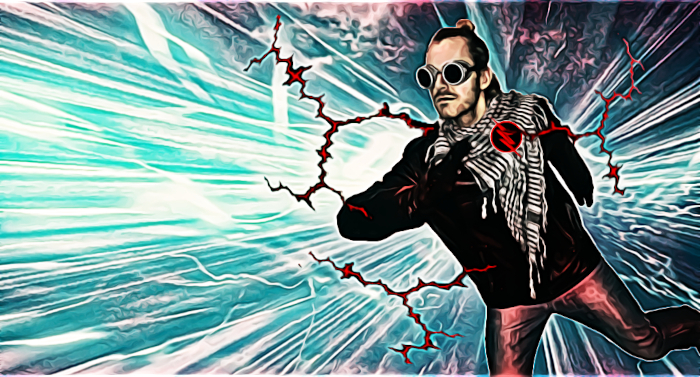
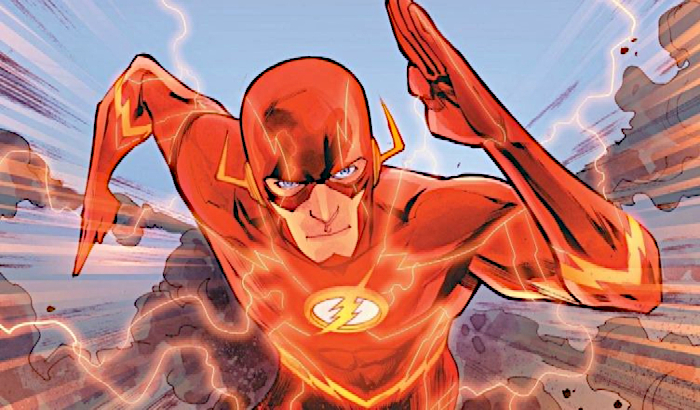
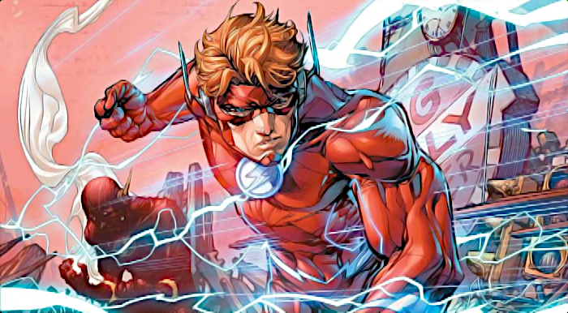
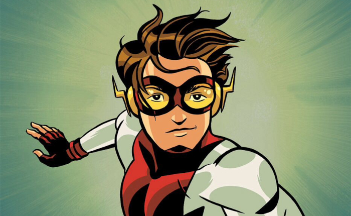
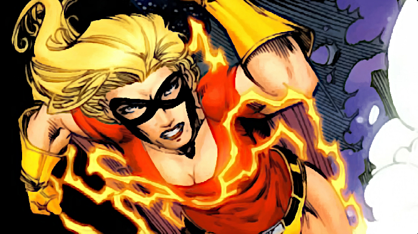
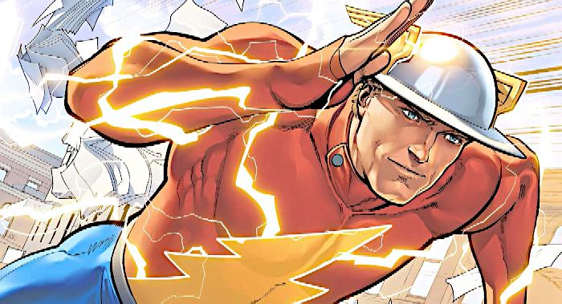

Team members:
Linux Kyrios
The first to discover the existence of the Speed Force on this Earth, while trying to reconstruct the Tesla experiments. When he was struck by lightning, he lost touch with reality for several years, exploring the sciences of philosophy and quantum physics to understand the phenomenon that had become his part. Once, during one of the races, he crossed the Speed Force barrier and discovered the existence of a multiverse. He traveled several times in time to fix his mistakes, but each attempt ended in a multiple deterioration of the situation, so he let go.
Barry Allen

The first man in the multiverse to be connected to Speed Force. It allows to move with almost the speed of light, as well as to react efficiently and quickly. He can also control his own molecules by introducing vibrations, thanks to which he can pass through solid objects, can travel in time and to other dimensions, create an aura, allowing to avoid damage while moving at great speed.
Barry Allen and his successors are equipped with a ring that stores the shrunken costume. In this way, Barry could always have the costume with him in case he needed it as Flash. When the button was pressed, the costume was fired from the ring and automatically became larger.
Barry Allen was killed several times during the Crisis in infinite lands, after his death he was sent to Speed Force, from which he got out after thirty years. He also traveled in time, which caused changes in space-time, almost destroying the whole world.
Wally West

Wally West was born in the Nebraska family of Rudolph and Mary West. As a boy he was a big fan of Flash. At the age of 10, he went to visit his aunt Iris, who lived in Central City, where his idol also lived and worked. He then met her fiancé, Barry Allen, a forensic scientist working in the local police laboratory (CCPD), and also a "friend" of a superhero (which he actually was). Wally was the first to meet his idol, who told him how he possessed his powers. When one day Wally found himself in a police lab, there was an accident identical to the one where Barry acquired his powers. Lightning fell into the room and in reaction to the chemicals, the boy gained super speed and other powers that Flash has. Barry decided to make Wally his assistant. As a Kid Flash, the boy had many adventures. Among other things, he became a founding member of the teenage superhero team, known as the Teen Titans.
During the Crisis on Infinite Earths, his uncle gave his life trying to stop a villain called Anti-Monitor, and Wally became his successor. Acting as the third Flash, he joined the Justice League. His new headquarters became the fictional Keystone City in Kansas. He married Linda Park, with whom he had two twins named Jay and Iris.
Bart Allen
Grandson of Barry Allen, who came from the future to support the whole team. However, before this happened, he fought many times against Linux Kyrios, which accidentally got to Prime Land. After getting into the past, he became known as Impulse, belonging to the Young Justice group.
Jesse Quick

In the hope of creating a successor, Johnny Quick taught a formula that gave him increased speed, his daughter Jesse. The formula also worked on Jesse and gained super speed. However, instead of becoming a disguised criminal fighter, as her father intended, Jesse decided to continue her education, as her mother asked.
When Jesse studied at the University of Gotham, after a long absence, a team of superheroes, with whom they were collaborators of her parents, the Justice Society of America, returned. Naturally, the theme of her thesis was "The Influence of Superheroes on Society," and she began following the returning heroes, cataloguing their adventures. When her father asked her to deliver some documents to the Society, the meeting meant that she helped the team as Jesse Quick, eventually fulfilling her father's dream of being a disguised fighter.
During this time she met Wally West, Flash, who later asked her to replace him if something happened to him. On his part it was a complicated plan, trying to force Bart Allen , Impulse, to take his role in Flash's legacy more seriously and become Wally's successor. Although she felt betrayed, she finally saved Wally's life, although her leg was injured in the process. When Wally returned from the mythical Speed Force, he he healed her leg and the earlier fraud was largely forgiven but not forgotten.
When shortly afterwards Jesse lost her increased speed, Wally was blamed for this, who directly used Speed Force energy instead of having a connection like other speedsters. In fact, it turned out that the cause was the villain of the Savitar, which broke her connection with Speed Force, as well as with many other speedsters. Nevertheless, Wally chose deported Jesse to accompany him to the Savitar lair, where she managed to regain her powers. During the next battle with Savitar, her father gave his life to protect his daughter from one of the Savitar forces and merged with Speed Force. Although Wally eventually triumphed over the villain, Jesse had to mourn his father.
Jay Garrick

Jason Garrick was a college student in 1938 when he accidentally inhaled hard water after a smoke break in his laboratory where he worked (later stories would turn it into hard steam). As a result, he finds that he can run at superhuman speed and has a similarly fast reflex.
After a short career as a student soccer star he wears a red shirt with a lightning conductor and a stylized metal helmet with wings. Then he starts the fight against crime as Flash. The helmet belonged to Jay's father, Joseph, who fought during the First World War. Sometimes he uses the helmet as a weapon or a kind of shield, as it was seen in Infinite Crisis. He also used it to direct the light beam in Eclipso. In The Flash: Rebirth(2010), he used it to destabilize Reverse Flash.
In early stories it seems to be common knowledge that Garrick is Flash. Later stories showed him as having his identity in secret, and that he is able to maintain it without using a mask by constantly "vibrating" his features, making him difficult to recognize or clearly photograph. The effectiveness of this is questionable because he later blamed his girlfriend, Joan, deducing his true identity on the lack of a mask. Garrick eventually made his identity as Flash audience for the world.
During his career he often got tangled up in semi-comical situations inadvertently initiated by Winky, Blinky and Noddy, a trio of tramps known as the Three Smokes, who tried their hand at one job after another and never succeeded.
His first case is against Faultless Four, a group of blackmailers who conspire to steal a nuclear bomber and sell it. It was later revealed that the professor found the last heavy water container and used it to get super fast, becoming a rival. He briefly takes Jay's speed after capturing him, making him super slow, but Jay uses the gases again, allowing him to regain his superspeed and defeat his rival.